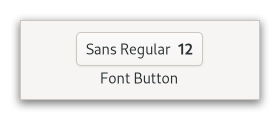

Gtk.FontDialogButton¶
Example¶

- Subclasses:
None
Methods¶
- Inherited:
Gtk.Widget (183), GObject.Object (37), Gtk.Accessible (18), Gtk.Buildable (1)
- Structs:
class |
|
|
|
|
|
|
|
|
|
|
|
|
|
|
|
|
|
|
|
|
|
|
|
|
Virtual Methods¶
- Inherited:
Gtk.Widget (25), GObject.Object (7), Gtk.Accessible (7), Gtk.Buildable (9)
Properties¶
- Inherited:
Name |
Type |
Flags |
Short Description |
|---|---|---|---|
r/w/en |
|||
r/w/en |
|||
r/w/en |
|||
r/w/en |
|||
r/w/en |
|||
r/w/en |
|||
r/w/en |
Signals¶
- Inherited:
Name |
Short Description |
|---|---|
Emitted when the font dialog button is activated. |
Fields¶
- Inherited:
Class Details¶
- class Gtk.FontDialogButton(**kwargs)¶
- Bases:
- Abstract:
No
- Structure:
Opens a font chooser dialog to select a font.
<picture> <source srcset=”font-button-dark.png” media=”(prefers-color-scheme: dark)”> <img alt=”An example
Gtk.FontDialogButton" src=”font-button.png”> </picture>It is suitable widget for selecting a font in a preference dialog.
- CSS nodes
`` fontbutton ╰── button.font
╰── [content]
GtkFontDialogButtonhas a single CSS node with name fontbutton which contains a button node with the .font style class.New in version 4.10.
- classmethod new(dialog)[source]¶
- Parameters:
dialog (
Gtk.FontDialogorNone) – theGtkFontDialogto use- Returns:
the new
GtkFontDialogButton- Return type:
Creates a new
GtkFontDialogButtonwith the givenGtkFontDialog.You can pass
NULLto this function and set aGtkFontDialoglater. The button will be insensitive until that happens.New in version 4.10.
- get_dialog()[source]¶
- Returns:
the
GtkFontDialog- Return type:
Returns the
GtkFontDialogof self.New in version 4.10.
- get_font_desc()[source]¶
- Returns:
the font
- Return type:
Returns the font of the button.
This function is what should be used to obtain the font that was chosen by the user. To get informed about changes, listen to “notify::font-desc”.
New in version 4.10.
- get_font_features()[source]¶
-
Returns the font features of the button.
This function is what should be used to obtain the font features that were chosen by the user. To get informed about changes, listen to “notify::font-features”.
Note that the button will only let users choose font features if [property`Gtk`.FontDialogButton:level] is set to
GTK_FONT_LEVEL_FEATURES.New in version 4.10.
- get_language()[source]¶
- Returns:
the language
- Return type:
Returns the language that is used for font features.
New in version 4.10.
- get_level()[source]¶
- Returns:
the level of detail
- Return type:
Returns the level of detail at which this dialog lets the user select fonts.
New in version 4.10.
- get_use_font()[source]¶
- Returns:
whether the selected font is used in the label
- Return type:
Returns whether the selected font is used in the label.
New in version 4.10.
- get_use_size()[source]¶
- Returns:
whether the selected font size is used in the label
- Return type:
Returns whether the selected font size is used in the label.
New in version 4.10.
- set_dialog(dialog)[source]¶
- Parameters:
dialog (
Gtk.FontDialog) – the newGtkFontDialog
Sets a
GtkFontDialogobject to use for creating the font chooser dialog that is presented when the user clicks the button.New in version 4.10.
- set_font_desc(font_desc)[source]¶
- Parameters:
font_desc (
Pango.FontDescription) – the new font
Sets the font of the button.
New in version 4.10.
- set_font_features(font_features)[source]¶
-
Sets the font features of the button.
New in version 4.10.
- set_language(language)[source]¶
- Parameters:
language (
Pango.LanguageorNone) – the new language
Sets the language to use for font features.
New in version 4.10.
- set_level(level)[source]¶
- Parameters:
level (
Gtk.FontLevel) – the level of detail
Sets the level of detail at which this dialog lets the user select fonts.
New in version 4.10.
Signal Details¶
- Gtk.FontDialogButton.signals.activate(font_dialog_button)¶
- Signal Name:
activate- Flags:
- Parameters:
font_dialog_button (
Gtk.FontDialogButton) – The object which received the signal
Emitted when the font dialog button is activated.
The
::activatesignal onGtkFontDialogButtonis an action signal and emitting it causes the button to pop up its dialog.New in version 4.14.
Property Details¶
- Gtk.FontDialogButton.props.dialog¶
- Name:
dialog- Type:
- Default Value:
- Flags:
The
GtkFontDialogthat contains parameters for the font chooser dialog.New in version 4.10.
- Gtk.FontDialogButton.props.font_desc¶
- Name:
font-desc- Type:
- Default Value:
- Flags:
The selected font.
This property can be set to give the button its initial font, and it will be updated to reflect the users choice in the font chooser dialog.
Listen to
notify::font-descto get informed about changes to the buttons font.New in version 4.10.
- Gtk.FontDialogButton.props.font_features¶
- Name:
font-features- Type:
- Default Value:
- Flags:
The selected font features.
This property will be updated to reflect the users choice in the font chooser dialog.
Listen to
notify::font-featuresto get informed about changes to the buttons font features.New in version 4.10.
- Gtk.FontDialogButton.props.language¶
- Name:
language- Type:
- Default Value:
- Flags:
The selected language for font features.
This property will be updated to reflect the users choice in the font chooser dialog.
Listen to
notify::languageto get informed about changes to the buttons language.New in version 4.10.
- Gtk.FontDialogButton.props.level¶
- Name:
level- Type:
- Default Value:
- Flags:
The level of detail for the font chooser dialog.
- Gtk.FontDialogButton.props.use_font¶
- Name:
use-font- Type:
- Default Value:
- Flags:
Whether the buttons label will be drawn in the selected font.